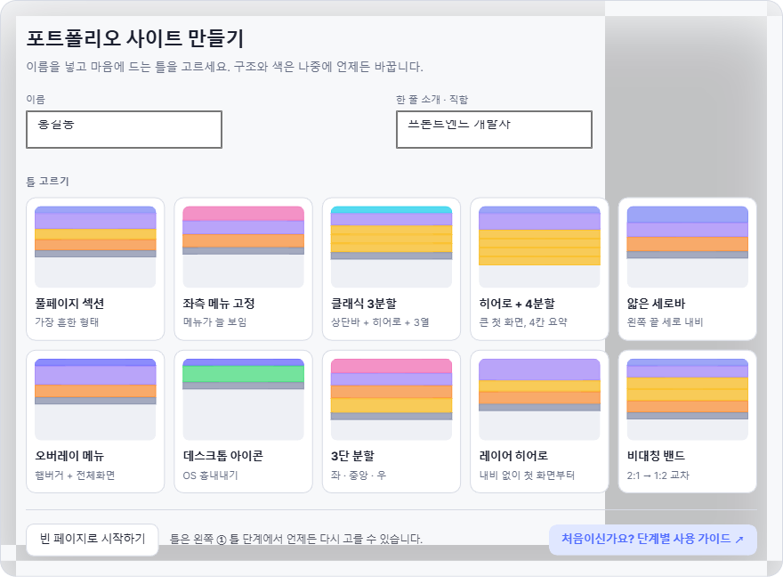
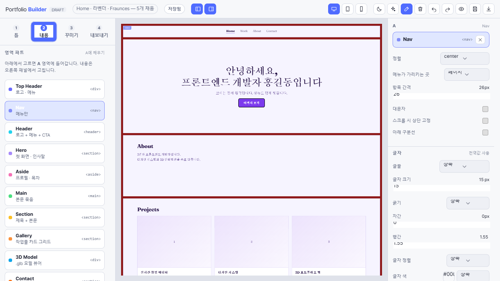
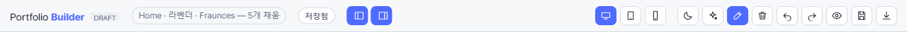
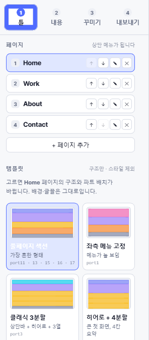
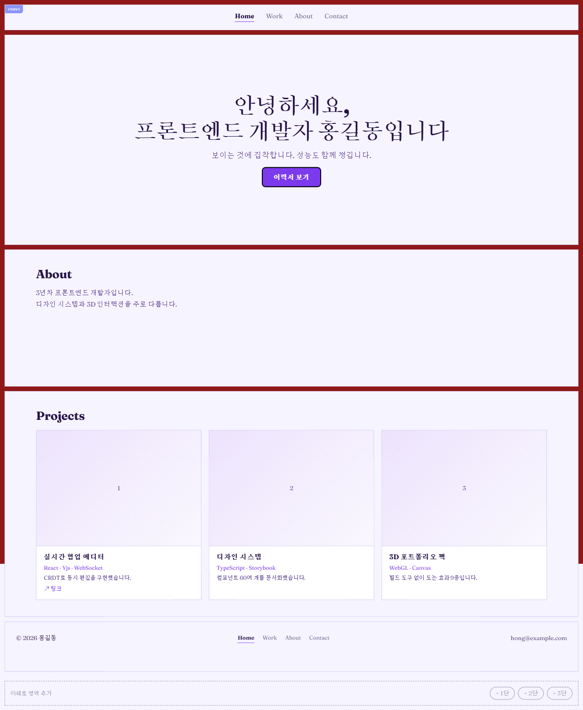
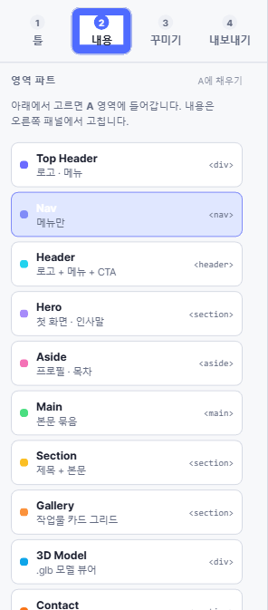
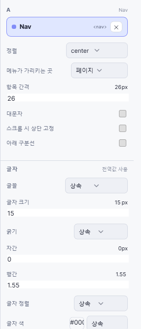
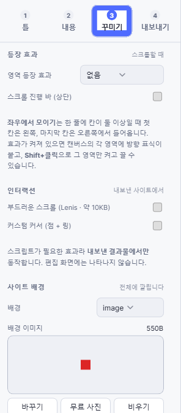
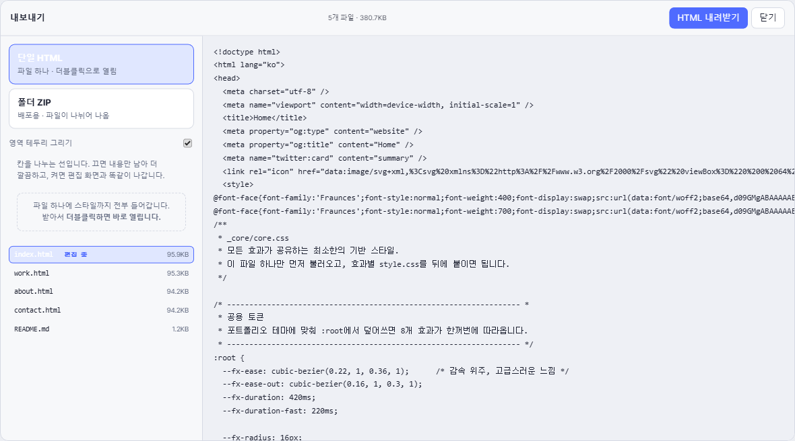
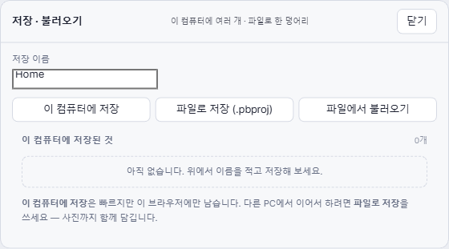

처음부터 배포까지, 14단계 사용 가이드
포트폴리오 빌더를 처음 쓰는 분을 위한 안내서입니다. 실제 화면 캡처를 보면서 탭을 1단계부터 12단계까지 하나씩 따라 해 보세요. 13 · 14단계는 순서대로 읽는 곳이 아니라, 필요할 때 찾아보는 사전입니다. 한 단계를 끝내고 빌더에서 직접 해 본 다음, 다음 단계로 넘어가면 됩니다.
1단계 · 시작하기 — 첫 화면에서 할 일
빌더를 처음 열면 아래와 같은 「포트폴리오 사이트 만들기」 창이 나옵니다. 아무것도 없는 빈 화면에서 시작하지 않도록, 완성된 구조 하나를 먼저 골라 얹어 주는 화면입니다.

- 왼쪽 이름 칸에 본인 이름을 적습니다 (예: 홍길동). 사이트 첫 화면의 인사말 — “안녕하세요, 프론트엔드 개발자 홍길동입니다” — 에 자동으로 들어갑니다.
- 오른쪽 한 줄 소개 · 직함 칸에 직함을 적습니다 (예: 프론트엔드 개발자).
- 틀 고르기에서 카드 하나를 클릭합니다. 클릭하는 순간 그 구조로 사이트가 만들어집니다.
틀 10종, 무엇이 다른가요?
| 틀 이름 | 이런 분에게 |
|---|---|
| 풀페이지 섹션 | 가장 흔하고 무난한 형태. 위에서 아래로 한 섹션씩 스크롤됩니다. 뭘 고를지 모르겠다면 이것부터. |
| 좌측 메뉴 고정 | 메뉴가 왼쪽에 늘 보입니다. 페이지가 많은 사이트에 좋습니다. |
| 클래식 3분할 | 상단바 + 큰 첫 화면 + 3열 카드. 회사 소개 페이지 같은 안정적인 느낌. |
| 히어로 + 4분할 | 큰 첫 화면 아래 4칸 요약. 보여줄 항목이 뚜렷이 4가지일 때. |
| 얇은 세로바 / 비대칭 밴드 / 3단 분할 | 레이아웃에 개성을 주고 싶을 때. 디자인 감각을 어필하는 포트폴리오에 어울립니다. |
| 오버레이 메뉴 | 햄버거 버튼을 누르면 전체 화면 메뉴가 덮이는 형태. |
| 데스크톱 아이콘 | 운영체제 바탕화면을 흉내 낸 독특한 형태. 눈에 띄고 싶다면. |
| 레이어 히어로 | 내비게이션 없이 첫 화면부터 콘텐츠가 겹겹이 쌓입니다. |
고민된다면: 아무거나 골라도 됩니다. 구조는 나중에 왼쪽 1 틀 단계에서 언제든 다시 바꿀 수 있고, 바꿔도 써 둔 글과 색은 유지됩니다. 완전히 백지에서 시작하고 싶을 때만 빈 페이지로 시작하기를 누르세요.
이 창을 다시 보고 싶다면: 주소 뒤에 ?welcome=1을 붙여 접속하면 언제든 다시 열립니다.
2단계 · 화면 익히기 — 어디에 무엇이 있나
틀을 고르면 아래와 같은 편집 화면이 나옵니다. 크게 왼쪽 패널 · 가운데 캔버스 · 오른쪽 편집 패널 세 부분입니다.

| 구역 | 하는 일 |
|---|---|
| 왼쪽 패널 | 맨 위의 1 틀 2 내용 3 꾸미기 4 내보내기 네 탭이 작업 순서입니다. 탭을 누르면 패널 내용이 그 단계에 맞게 바뀝니다. |
| 가운데 캔버스 | 지금 만드는 사이트가 실제 모습 그대로 보입니다. 여기서 영역(칸)을 클릭해서 선택합니다. |
| 오른쪽 편집 패널 | 캔버스에서 선택한 영역의 내용·모양을 고치는 곳입니다. 아무것도 선택하지 않으면 “캔버스에서 영역을 클릭하세요”라고 나옵니다. |
상단 도구 막대

- 왼쪽 — 지금 문서의 요약(페이지 · 테마 · 글꼴 · 채운 영역 수)과 저장됨 표시. 작업은 이 브라우저에 자동 저장됩니다.
- 화면 크기 버튼(모니터 · 태블릿 · 폰 모양) — 모바일에서 어떻게 보일지 캔버스 폭을 바꿔 미리 봅니다.
- 달 모양 — 편집 화면을 어둡게(다크 모드). 결과물 색과는 무관합니다.
- 되돌리기 / 다시하기(화살표) — 실수했을 때 누르세요. 몇 단계든 되돌아갑니다.
- 눈 모양 — 편집 표시 없이 결과물만 미리보기.
- 디스크 모양 — 저장 · 불러오기 창 (8단계에서 자세히).
- 아래 화살표 — 내보내기 창 (6단계에서 자세히).
기억할 것 하나: 이 화면에서 길을 잃으면 왼쪽 위 네 개 탭만 보세요. 1에서 4까지 순서대로 가면 완성됩니다.
3단계 · 틀 잡기 — 페이지와 구조
왼쪽 1 틀 탭에서 사이트의 뼈대를 정합니다. 패널이 아래처럼 바뀝니다.

페이지 — 사이트의 상단 메뉴가 됩니다
- 페이지 목록을 봅니다. Home · Work · About · Contact처럼 한 줄에 하나씩 있고, 이 순서 그대로 사이트 상단 메뉴가 됩니다.
- 페이지 이름을 클릭하면 그 페이지로 이동해 편집할 수 있습니다.
- 각 줄의 위/아래 화살표로 순서를 바꾸고, 연필로 이름을 고치고, ×로 지웁니다.
- 맨 아래 + 페이지 추가로 새 페이지를 만듭니다.
첫 번째 페이지가 대문입니다. 방문자가 주소로 들어오면 목록 맨 위 페이지(index.html)를 먼저 봅니다. 가장 보여주고 싶은 페이지를 맨 위에 두세요.
템플릿 — 지금 페이지의 구조 바꾸기
- 패널 아래쪽 템플릿 카드를 누르면 지금 보고 있는 페이지의 구조와 파트 배치가 그 틀로 바뀝니다.
- 배경색·글꼴·이미 써 둔 글은 그대로 유지되므로, 여러 번 눌러 보면서 마음에 드는 구조를 찾아도 됩니다.
- 페이지마다 다른 템플릿을 써도 됩니다 — 예: Home은 히어로형, Work는 카드 그리드형.
템플릿 10종 — 무엇이 어떻게 나오나
템플릿을 누르면 칸 배치와 파트가 한꺼번에 얹힙니다. 색과 글꼴은 건드리지 않으므로, 마음에 안 들면 다른 것을 눌러 몇 번이고 갈아 볼 수 있습니다.
| 템플릿 | 들어오는 파트 | 화면에 나오는 모습 |
|---|---|---|
| 풀페이지 섹션 | Nav · Hero · Section · Gallery · Footer | 고정 메뉴 아래로 섹션이 위에서 아래로 쭉 쌓입니다. 가장 무난합니다 — 무엇을 고를지 모르겠다면 이것. |
| 좌측 메뉴 고정 | Aside · Hero · Gallery · Footer | 왼쪽 기둥에 사진과 메뉴가 붙박이로 남고 오른쪽 본문만 스크롤됩니다. |
| 클래식 3분할 | Header · Hero · Section ×3 · Footer | 상단바 + 큰 첫 화면 + 3열 카드. 회사 소개 페이지 같은 안정적인 인상. |
| 히어로 + 4분할 | Nav · Hero · Section ×4 | 큰 첫 화면 아래 4칸이 나란히. 보여줄 갈래가 넷으로 딱 떨어질 때. |
| 얇은 세로바 | Nav · Hero · Gallery · Footer | 왼쪽 끝에 아주 좁은 세로 바만 두고 본문이 폭을 거의 다 씁니다. |
| 오버레이 메뉴 | Top Header · Hero · Gallery · Footer | 얇은 상단 바에 메뉴만 두고 첫 화면이 화면을 꽉 채웁니다. |
| 데스크톱 아이콘 | Top Header · Main · Footer | 맨 위 상태바와 아이콘 격자, 맨 아래 독. 운영체제 바탕화면을 흉내 냅니다 — 개성이 강한 대신 호불호가 갈립니다. |
| 3단 분할 | Aside · Hero · Gallery · Section · Footer | 양옆에 보조 영역, 가운데가 본문. 정보가 많을 때 씁니다. |
| 레이어 히어로 | Hero · Section · Gallery · Footer | 상단 바 없이 첫 화면부터 시작합니다. 패럴랙스 효과와 잘 맞습니다. |
| 비대칭 밴드 | Nav · Hero · Section ×2 · Gallery · Footer | 넓은 칸과 좁은 칸을 위아래로 엇갈리게 둡니다. 단조로움이 덜합니다. |
템플릿을 바꾸면 칸 배치가 갈아엎어집니다. 써 둔 글은 같은 이름의 칸에 남지만, 칸 수가 다르면 갈 곳이 없는 내용은 사라집니다. 글을 많이 쓴 뒤에는 Ctrl+Z로 되돌릴 수 있다는 것을 기억하고 바꾸세요.
사이트 구성 — 한 페이지인가, 여러 페이지인가
1 틀 탭 맨 위에서 고릅니다. 결과물의 파일 개수와 메뉴 동작이 통째로 달라지는 선택이라 먼저 정하는 편이 좋습니다.
| 한 페이지 (퀵메뉴) | 여러 페이지 | |
|---|---|---|
| 메뉴를 누르면 | 같은 문서 안에서 그 위치로 스크롤됩니다 | 다른 파일로 이동합니다 |
| 결과물 파일 | index.html 하나 | 페이지마다 .html 하나씩 |
| 어울리는 경우 | 내용이 많지 않고 한 번에 훑게 하고 싶을 때. 요즘 포트폴리오의 기본 | 프로젝트가 많아 갈래별로 나눠 보여줘야 할 때 |
| 섹션 스냅 | 쓸 수 있습니다 | 의미가 없습니다 |
메뉴 동기화는 기본으로 켜져 있습니다. 한 페이지에서 메뉴 파트를 고치면 같은 파트를 쓰는 다른 페이지에도 함께 적용됩니다 — 페이지마다 따로 고치다 메뉴가 어긋나는 일을 막아 줍니다.
사이트 정보 — 탭 제목과 공유 미리보기
- 패널의 사이트 정보 칸에서 브라우저 탭 제목과, 링크를 카톡·슬랙에 붙였을 때 나오는 제목·설명을 정합니다.
- 비워 두면 첫 페이지 이름이 대신 쓰입니다.
4단계 · 영역 다루기 — 칸을 만들고, 지우고, 늘리기
파트를 넣기 전에 칸(영역)부터 원하는 모양으로 만들어 둡니다. 템플릿이 준 칸을 그대로 써도 되지만, 칸을 더 넣거나 빼는 방법을 알면 원하는 구성을 훨씬 자유롭게 만들 수 있습니다.

1) 영역 선택하기
- 캔버스에서 아무 칸이나 클릭하면 선택됩니다. 오른쪽에 그 영역의 편집 패널이 열립니다.
- 선택을 풀려면 영역 밖 빈 곳을 클릭합니다.
2) + 로 칸 늘리기
영역 테두리 네 변 한가운데의 + 버튼이 그 방향으로 칸을 넣어 줍니다. 마우스를 영역 위에 올려야 보입니다.
| 누르는 곳 | 결과 |
|---|---|
| 위쪽 + | 이 영역 바로 위에 새 행이 들어갑니다. |
| 아래쪽 + | 이 영역 바로 아래에 새 행이 들어갑니다. |
| 왼쪽 / 오른쪽 + | 같은 행에 칸을 하나 더 넣어 좌우로 나눕니다. |

좌우 + 가 안 보인다면 그 행이 이미 꽉 찼거나(한 행에 6칸이 최대), 템플릿이 정한 뼈대 칸이라 좌우로 못 늘리는 자리입니다. 위/아래 + 로 새 행을 만든 다음 그 행에서 좌우로 나누면 됩니다.
3) × 로 안 쓰는 칸 지우기
파트를 넣지 않은 빈 영역에는 오른쪽 위에 × 가 나타납니다. 누르면 그 칸이 사라지고 남은 칸들이 자리를 채웁니다.

4) 손잡이로 크기 바꾸기
영역을 선택하면 오른쪽 아래 모서리에 손잡이가 생깁니다. 끌어서 가로·세로를 바꿉니다.

- 가로를 늘리면 같은 행의 옆 칸이 그만큼 자동으로 좁아집니다. 행 전체 폭은 그대로입니다.
- 가로를 줄이면 남은 자리가 여백으로 남습니다. 이 여백을 어떻게 쓸지는 7단계 배치 다듬기에서 정합니다.
- 세로는 내용보다 작게 줄어들지 않습니다. 글이나 사진이 잘리는 것을 막기 위해서입니다. 더 줄이고 싶다면 안의 내용(글자 크기·여백)을 먼저 줄이세요.
되돌리기를 기억하세요. 이 단계의 모든 동작은 Ctrl+Z 로 되돌아갑니다. 마음껏 눌러 보세요.
5단계 · 파트 넣기 — 칸에 부품 끼우기
이제 2 내용 탭으로 갑니다. 이 빌더의 핵심 개념은 이것 하나입니다:
페이지는 여러 개의 영역(칸)으로 나뉘어 있고,
각 영역에 “파트”(부품)를 골라 끼운다.
파트는 다섯 묶음으로 나뉘어 있습니다

| 묶음 | 들어 있는 파트 | 쓰는 자리 |
|---|---|---|
| 머리 | Top Header · Nav · Header | 페이지 맨 위 메뉴 |
| 본문 | Hero · Aside · Main · Section · Gallery | 실제 내용이 들어가는 대부분의 칸 |
| 배너 | Cover · Marquee · CTA · Slider | 시선을 끄는 큰 띠·강조 구역 |
| 마무리 | Contact · Links · Footer | 연락처와 페이지 하단 |
| 3D | 3D Model | 모델 뷰어 (9단계에서 다룹니다) |
넣는 방법

영역을 선택한 상태에서 왼쪽 영역 파트 목록을 누르면 그 파트가 영역에 들어갑니다. 자주 쓰는 파트:
| 파트 | 용도 |
|---|---|
| Hero | 첫 화면 인사말. 큰 제목 + 소개 문장 + 버튼(이력서 보기 등). 대부분 맨 위 영역에 넣습니다. |
| Nav / Top Header / Header | 상단 메뉴. Nav는 메뉴만, Top Header는 로고+메뉴, Header는 로고+메뉴+버튼까지. |
| Section | 제목 + 본문 글. 소개, 경력, 기술 스택 등 일반 내용은 전부 이걸로. |
| Gallery | 작업물 카드 그리드. 프로젝트 목록에 쓰며, 카드마다 사진·제목·설명·링크를 넣습니다. |
| 3D Model | .glb 3D 모델 뷰어. 9단계에서 자세히 다룹니다. |
| Contact / Links / Footer | 연락처(이메일 · 깃허브 · 링크드인), 링크 모음, 페이지 하단 마무리. |
| Cover | 배경 사진 위에 큰 문구를 얹은 표지. 페이지 첫인상을 강하게 줄 때. |
| Marquee | 글자가 옆으로 흘러가는 띠. 기술 스택이나 키워드를 나열할 때 좋습니다. |
| CTA | “연락 주세요” 같은 행동 유도 구역. 버튼이 함께 들어갑니다. |
| Slider | 여러 장을 좌우로 넘겨 보는 슬라이드. |
파트를 바꾸거나 비우려면: 왼쪽 목록에서 다른 파트를 누르면 교체되고, 편집 패널 상단의 × 를 누르면 칸이 다시 빈 상태가 됩니다.
6단계 · 내용 고치기 — 오른쪽 편집 패널
영역을 선택하면 오른쪽에 그 파트 전용 편집 항목이 열립니다. 여기서 글과 세부 모양을 고칩니다.
기본 사용법

- 글 내용은 입력칸에 쓰는 대로 캔버스에 즉시 반영됩니다.
- 파트마다 항목이 다릅니다 — Hero는 인사말·버튼, Gallery는 카드 추가/삭제, Nav는 정렬·간격 등.
- 아래쪽 글자 묶음에서 이 영역만의 글꼴·크기·색을 바꿀 수 있습니다. 기본값은 상속(전체 설정을 따름)입니다.
- 이것저것 바꾸다 엉켰으면 맨 아래 전역값으로 되돌리기 한 번으로 초기화됩니다.
- 파트를 다른 것으로 바꾸려면 왼쪽 목록에서 다른 파트를 누르고, 비우려면 편집 패널 상단의 ×를 누릅니다.
사진 넣기: Gallery 카드나 배경의 사진 칸은 파일 선택으로 내 컴퓨터의 이미지를 넣습니다. 넣은 사진은 결과물에 함께 담깁니다.
모르는 항목은 ? 를 누르세요
항목 이름 옆의 작은 ? 를 누르면 “이게 무엇이고 언제 쓰는지” 설명이 말풍선으로 열립니다. 설명문을 화면에 늘 깔아 두지 않고 필요할 때만 꺼내 보도록 한 것입니다.

묶음은 접었다 펼 수 있습니다
편집 항목이 많은 파트는 묶음별로 접혀 있습니다. 묶음 제목을 누르면 펼쳐집니다. 지금 고칠 것만 펴 두면 패널이 짧아져 찾기 쉽습니다.

항목이 더 있습니다 — 부가 기능
상단 도구 막대의 부가 기능을 켜면 평소에 감춰 둔 세밀한 조정 항목들이 함께 나타납니다. 처음에는 꺼 둔 채로 쓰다가, 익숙해지면 켜 보세요.
이것저것 바꾸다 엉켰다면 패널 맨 아래 전역값으로 되돌리기 한 번으로 그 영역 설정이 초기화됩니다. 문서 전체는 Ctrl+Z 입니다.
7단계 · 배치 다듬기 — 여백과 자유 배치
4단계에서 칸 크기를 줄이면 남은 여백이 생깁니다. 그 여백을 어떻게 나눌지, 그리고 칸 안의 항목을 손으로 옮길지를 여기서 정합니다. 건너뛰어도 사이트는 완성됩니다 — 더 다듬고 싶을 때 오세요.
1) 행 정렬 — 여백을 어디에 둘까
한 행에 칸이 여럿이고 여백이 남을 때, 그 여백을 어느 쪽에 몰지 고릅니다.

| 고르는 값 | 결과 |
|---|---|
| 왼쪽 / 가운데 / 오른쪽 | 칸들을 그쪽으로 몰고 여백을 반대편에 둡니다. |
| 양끝 | 첫 칸은 왼쪽 끝, 마지막 칸은 오른쪽 끝에 붙이고 여백을 사이에 나눕니다. |
| 고르게 | 칸 사이와 양 끝에 여백을 같은 크기로 나눕니다. |
| 자유 | 칸을 손으로 끌어 원하는 가로 위치에 둡니다. |
2) 영역 안 자유 배치 — 항목을 손으로 옮기기
오른쪽 패널의 영역 안 자유 배치(항목 끌기) 를 켜면, 그 칸 안의 제목·글·버튼을 마우스로 끌어 원하는 자리에 놓을 수 있습니다.

- 켜는 순간 항목들이 지금 있던 자리 그대로 고정됩니다. 위로 튀어 오르지 않습니다.
- 3D Model을 뺀 모든 파트에서 쓸 수 있습니다.
- 폰 화면에서는 자유 배치가 자동으로 풀리고 위아래로 쌓입니다 — 좁은 화면에서 글이 겹치지 않게 하기 위해서입니다.
자유 배치는 마지막에 쓰세요. 글을 다 쓰고 크기를 정한 다음에 위치를 잡아야 두 번 일하지 않습니다.
8단계 · 꾸미기 — 색 · 글꼴 · 배경
3 꾸미기 탭은 사이트의 분위기(색 · 글꼴 · 배경 · 움직임)를 정하는 곳입니다.

테마 18종 — 색 한 벌을 통째로
테마를 누르면 배경 · 글자 · 강조색이 한 벌로 바뀝니다. 색을 하나씩 고를 필요가 없게 미리 맞춰 둔 조합입니다.
| 결 | 테마 | 인상 |
|---|---|---|
| 밝은 | 페이퍼 · 아틱 · 크림 · 아이보리 블랙 · 민트 · 세이지 | 깔끔하고 읽기 편합니다. 어떤 직군에나 무난합니다. |
| 어두운 | 미드나잇 · 카본 · 슬레이트 · 오션 · 포레스트 | 작업물 사진이 도드라집니다. 개발 · 3D · 사진 쪽에 잘 맞습니다. |
| 색이 강한 | 선셋 · 버건디 · 그레이프 · 네온 · 로즈 · 라벤더 · 모카 | 개성이 뚜렷합니다. 디자인 · 브랜드 쪽. 작업물 색과 부딪히지 않는지 보세요. |
글꼴 10종
| 글꼴 | 인상과 쓰임 |
|---|---|
| 모던 산세리프 | 기본값. 가장 무난하고 읽기 좋습니다. |
| 초대형 타이틀 | 제목이 아주 큽니다. 작업물이 적어도 첫인상이 강해집니다. |
| 세리프 · Instrument Serif · Fraunces | 붓 자국이 있는 글꼴. 편집 · 브랜드 · 사진 쪽의 차분한 인상. |
| 모노스페이스 | 글자 폭이 같습니다. 개발자 포트폴리오의 정석. |
| Geist · Manrope · DM Sans | 산세리프의 결이 조금씩 다릅니다. 취향으로 고르면 됩니다. |
| 내 글꼴 (업로드) | 가진 글꼴 파일을 직접 올립니다. 웹에 배포해도 되는 라이선스인지 반드시 확인하세요. |
글꼴 파일은 결과물에 함께 담겨 나갑니다. 방문자 컴퓨터에 그 글꼴이 없어도 똑같이 보입니다.
사이트 배경
페이지 전체 뒤에 깔리는 배경입니다. 이미지 · 영상 · 그라디언트 중에서 고릅니다.
| 항목 | 결과 |
|---|---|
| 배경 이미지 / 영상 | 페이지 뒤에 깔립니다. 영상은 첫 화면 그림을 함께 넣어 두면 재생 전에도 빈 화면이 안 보입니다. |
| 움직임 | 배경이 고정될지, 스크롤을 따라갈지 정합니다. |
| 어둡게 | 배경 위에 검은 막을 덧씌웁니다. 글자가 안 읽힐 때 제일 먼저 올릴 값입니다. |
| 흐림 · 흑백 | 배경만 흐리거나 색을 빼서 내용이 앞으로 나오게 합니다. |
| 아래로 어둡게 | 위는 밝고 아래로 갈수록 어두워집니다. 아래쪽 글자가 잘 읽힙니다. |
| 그레인 | 필름 같은 미세한 입자가 얹힙니다. 배경 이미지가 없어도 켤 수 있습니다. |
여백과 상자 모양 — 사이트 전체에 걸립니다
| 항목 | 결과 |
|---|---|
| 모서리 | 모든 칸의 모서리 둥글기 (0–40px). 0이면 각진 인상, 크면 부드러운 인상. |
| 영역 간격 (거터) | 칸과 칸 사이 틈 (0–40px). 0으로 두면 칸이 딱 붙어 한 덩어리처럼 보입니다. |
| 안쪽 여백 | 칸 테두리와 글 사이 거리 (0–96px). 넉넉할수록 여유로워 보입니다. |
| 바깥 여백 | 화면 좌우 끝과 내용 사이 거리. |
| 콘텐츠 최대 폭 | 넓은 화면에서 글이 가로로 너무 길어지지 않게 막습니다. 글줄이 길면 읽기 힘듭니다. |
| 테두리 | 칸 둘레 선 두께 (0–6px). |
| 그리드 가이드 | 칸을 맞출 때 참고하는 세로 안내선. 편집 화면에만 보이고 결과물에는 안 나갑니다. |
색과 글꼴
- 배경색(테마) 드롭다운 — 18종. 고르는 순간 사이트 전체의 색 조합이 한 번에 바뀝니다. 밝은 톤(아이보리 · 세이지 · 크림)부터 진한 톤(네온 · 버건디 · 다크)까지.
- 글꼴 드롭다운 — Inter · Pretendard · Geist 등 10종. 맨 아래 내 글꼴 (업로드)를 고르면
.ttf파일을 올려 내 글꼴을 쓸 수 있고, 내보내기에도 그대로 담깁니다. - 여백 · 모서리 · 테두리 — 모든 영역에 한 번에 적용되는 전역값. 특정 영역만 다르게 하려면 4단계처럼 그 영역을 선택해 덮어씁니다.
사이트 배경
- 사이트 전체 뒤에 이미지나 영상을 깔 수 있습니다. 고정을 켜면 스크롤할 때 배경은 제자리에 있어 패럴랙스 느낌이 납니다.
- 배경을 깔면 각 영역은 기본적으로 불투명하게 내용을 지킵니다. 특정 영역만 배경이 비쳐 보이게 하려면 그 영역을 선택해 비침 값을 올리세요.
9단계 · 효과와 3D 모델
여기부터는 없어도 되는 단계입니다. 사이트를 더 살아 움직이게 만들고 싶을 때 씁니다.
움직임 효과
- 영역 등장 효과 — 스크롤하면 영역이 떠오르듯 나타납니다. 꾸미기 탭에서 전체 방식을 고르고, 캔버스에서 특정 영역만 Shift+클릭하면 그 영역만 켜고 끌 수 있습니다.
- 텍스트 효과 — 글자가 뒤섞이며 나타나는 스크램블 등. 영역을 선택하면 편집 패널의 효과 목록에서 고를 수 있습니다.
- 인터랙션 — 부드러운 스크롤, 커스텀 커서 등은 스크립트가 필요해서 내보낸 결과물에서만 동작합니다. 편집 화면에 안 보여도 정상입니다.
3D 모델 (GLB)
- 영역 하나를 선택하고 파트 목록에서 3D Model을 끼웁니다.
- 편집 패널에서 GLB 파일을 선택해 올립니다. 마우스를 따라 모델이 움직이고, 잡고 돌릴 수도 있습니다.
- 파일이 40MB를 넘으면 자동 압축을 제안합니다 — 수십 MB짜리가 1~2MB로 줄어드는 경우가 많으니 그대로 진행하면 됩니다.
- 더 사실적인 반사·조명을 원하면 환경광 탭에서
.hdr파일을 올리거나 안내된 무료 다운로드 링크를 이용합니다 (.exr은 지원되지 않습니다).
3D는 단일 HTML에 담기지 않습니다. 브라우저 보안 제약 때문에 더블클릭으로 여는 단일 HTML에서는 3D가 빠집니다. 3D를 썼다면 다음 단계에서 폴더 ZIP으로 내보내세요.
10단계 · 내보내기 — 파일로 받기
사이트가 마음에 들면 상단 오른쪽 아래 화살표 아이콘(또는 4 내보내기 탭)을 누릅니다. 아래 창이 열립니다.

화면 설명
| 위치 | 내용 |
|---|---|
| 왼쪽 위 두 카드 | 내보내기 방식 선택. 단일 HTML은 파일 하나로 나와 더블클릭이면 열립니다. 폴더 ZIP은 페이지별 파일로 나뉘어 나오고 배포용입니다. |
| 영역 테두리 그리기 | 칸을 나누는 선을 결과물에도 그릴지. 끄면 내용만 남아 더 깔끔합니다. |
| 파일 목록 | 결과물에 담기는 파일들과 용량. 편집 중 표시는 지금 편집하던 페이지입니다. 파일명을 누르면 오른쪽 미리보기가 바뀝니다. |
| 오른쪽 코드 창 | 실제로 저장될 코드입니다. 눈으로 확인만 하면 되고, 고칠 필요는 없습니다. |
| 오른쪽 위 파란 버튼 | HTML 내려받기 또는 ZIP 내려받기 — 이걸 누르면 다운로드됩니다. |
두 방식, 무엇이 나오나
| HTML 내려받기 | ZIP 내려받기 | |
|---|---|---|
| 나오는 것 | .html 파일 한 개 | 폴더 한 벌 — index.html, assets/site.css, 글꼴, 사진, README.md |
| 여는 법 | 더블클릭하면 바로 열립니다 | 배포하거나 서버로 열어야 제대로 돕니다 |
| 3D 효과 | 빠집니다 | 포함됩니다 |
| 쓰는 때 | 남에게 파일 하나로 보내 확인시킬 때 | 실제 배포용. 대부분 이쪽입니다 |
3D 모델을 넣었다면 반드시 ZIP입니다. 단일 HTML에는 3D가 들어가지 않습니다 — 모델 파일을 파일 하나에 욱여넣을 수 없기 때문입니다.
광고나 제휴 링크는 결과물에 절대 들어가지 않습니다. 편집 화면에 보이는 배너는 이 도구를 유지하기 위한 것이고, 여러분이 내려받는 파일에는 여러분이 만든 것만 담깁니다.
무엇으로 받을까?
| 단일 HTML | 폴더 ZIP | |
|---|---|---|
| 형태 | 파일 하나 | 페이지별 파일 묶음 |
| 여는 법 | 더블클릭이면 끝 | 서버에 올려서 (배포용) |
| 3D 효과 | 빠짐 | 포함 |
| 추천 용도 | 과제 제출 · 빠른 확인 · 이메일 첨부 | 실제 인터넷 배포 |
스타일 · 글꼴 · 사진이 전부 함께 담깁니다. 받은 파일만 있으면 인터넷이 없어도, 어떤 컴퓨터에서도 똑같이 보입니다.
11단계 · 무료로 배포하기 — 내 주소 만들기
내보낸 ZIP을 인터넷에 올리면 누구에게나 보낼 수 있는 내 포트폴리오 주소가 생깁니다. 무료로 되는 방법부터 소개합니다.
GitHub Pages (무료 · 추천)
- GitHub 계정을 만듭니다 (무료).
- 새 저장소(repository)를 만들고, 내보낸 ZIP의 압축을 풀어 파일들을 올립니다.
- 저장소 설정에서 Pages를 켜면 몇 분 안에
내아이디.github.io/저장소이름주소가 생깁니다.
화면 캡처와 함께 하나씩 따라 하는 상세 가이드가 준비되어 있습니다:
- GitHub Pages로 무료 배포하기 (5분 가이드) — 3D 효과가 안 보일 때 해결법 포함
- 내 도메인(.com) 연결하기 —
이름.com같은 나만의 주소를 붙이고 싶을 때 (선택)
고친 다음에는?
- 배포한 뒤 내용을 고치면, 빌더에서 다시 내보내서 같은 저장소에 올리면 됩니다. 주소는 그대로 유지됩니다.
- 이력서·자기소개서에 주소를 적어 두면 채용 담당자가 바로 열어 볼 수 있습니다.
12단계 · 저장 · 불러오기와 마무리 팁
작업은 브라우저에 자동 저장되지만, 여러 버전을 보관하거나 다른 컴퓨터로 옮길 때는 상단의 디스크 아이콘을 누릅니다.

| 버튼 | 용도 |
|---|---|
| 이 컴퓨터에 저장 | 이름을 붙여 여러 벌 보관합니다. 빠르지만 이 브라우저에만 남습니다. |
| 파일로 저장 (.pbproj) | 사진까지 한 덩어리 파일로 내려받습니다. USB · 클라우드로 옮기거나 백업할 때. |
| 파일에서 불러오기 | 다른 컴퓨터에서 .pbproj 파일을 열어 이어서 작업합니다. |
불러오기는 지금 작업을 덮어씁니다. 확인 창이 한 번 뜨고, 실수로 덮었다면 되돌리기로 살릴 수 있습니다.
세 가지가 각각 무엇을 하나
| 버튼 | 실제로 일어나는 일 | 주의 |
|---|---|---|
| 이 컴퓨터에 저장 | 이름을 붙여 브라우저 안에 여러 벌 보관합니다. 목록에서 ‘이 시점으로’를 누르면 그때로 되돌아갑니다. | 이 브라우저에만 남습니다. 브라우저 데이터를 지우면 함께 사라집니다. |
| 파일로 저장 (.pbproj) | 글 · 설정 · 올린 사진까지 한 덩어리 파일로 내려받습니다. | 진짜 백업은 이쪽입니다. USB · 클라우드에 두세요. |
| 불러오기 | .pbproj를 열어 이어서 작업합니다. 다른 컴퓨터에서도 그대로 이어집니다. | 지금 작업을 덮어씁니다. 확인 창이 한 번 뜨고, 실수해도 Ctrl+Z로 살릴 수 있습니다. |
자동 저장은 늘 돌고 있습니다. 상단에 ‘저장됨’이라고 보이면 브라우저에 이미 담긴 상태입니다. 위 세 가지는 여러 벌 보관과 컴퓨터 옮기기를 위한 것입니다.
마무리 팁
- 모바일 확인은 필수 — 채용 담당자의 절반은 폰으로 봅니다. 상단 화면 크기 버튼으로 폰 폭을 꼭 확인하세요.
- 다크 모드 버튼은 편집 화면용입니다. 결과물의 색은 꾸미기의 테마가 정합니다.
- 자주 파일로 백업하세요. 브라우저 데이터를 지우면 자동 저장본도 사라집니다.
- 막히면 가이드 목록의 다른 글을 참고하세요.
여기까지 왔다면 끝입니다. 이제 빌더를 열고 1단계부터 직접 만들어 보세요.
13단계 · 파트 사전 — 16종 전부
각 파트가 무엇이고, 무엇을 고칠 수 있고, 화면에 어떻게 나오는지를 모아 두었습니다. 처음부터 읽지 마시고, 쓸 파트가 생겼을 때 그 줄만 찾아보세요.
파트를 넣는 방법은 어느 파트든 같습니다 — 캔버스에서 칸을 클릭한 다음, 왼쪽 2 내용 탭에서 파트를 클릭하거나 칸으로 끌어다 놓습니다. 넣은 뒤 고칠 항목은 전부 오른쪽 패널에 나옵니다.
머리 — 페이지 맨 위 메뉴
| 파트 | 고칠 수 있는 것 | 화면에 나오는 모습 |
|---|---|---|
Top Header<div> |
로고 / 이름, 정렬, 메뉴 표시, 다크 모드 토글 버튼, 메뉴가 가리키는 곳, 스크롤 시 상단 고정, 내릴 땐 숨기기, 아래 구분선 | 왼쪽에 이름, 오른쪽에 메뉴가 놓인 가로 띠. 고정을 켜면 스크롤해도 위에 붙어 있고, ‘내릴 땐 숨기기’까지 켜면 아래로 내릴 때 사라졌다가 위로 올리면 다시 나타납니다. |
Nav<nav> |
정렬, 메뉴가 가리키는 곳, 다크 모드 토글, 항목 간격, 대문자, 상단 고정, 내릴 땐 숨기기, 아래 구분선 | 로고 없이 메뉴 항목만 늘어섭니다. 이름을 따로 보여줄 자리가 있을 때 씁니다. ‘대문자’를 켜면 ABOUT처럼 전부 대문자로 나옵니다. |
Header<header> |
로고 / 이름, CTA 버튼, 다크 모드 토글, 정렬, 메뉴 표시, 메뉴가 가리키는 곳, 상단 고정, 내릴 땐 숨기기, 아래 구분선 | Top Header에 버튼 하나가 더 붙은 형태. 오른쪽 끝 버튼은 연락처로 내려갑니다. “채용 문의” 같은 한마디를 늘 보이게 두고 싶을 때. |
메뉴가 가리키는 곳은 세 파트에 공통으로 있습니다. 한 페이지 구성이면 같은 문서 안의 위치로 스크롤하고, 여러 페이지 구성이면 다른 파일로 이동합니다. 사이트 구성은 1 틀 탭 맨 위에서 정합니다.
본문 — 실제 내용이 들어가는 칸
| 파트 | 고칠 수 있는 것 | 화면에 나오는 모습 |
|---|---|---|
Hero<section> |
제목, 부제, 버튼 글자, 버튼에 파일 걸기(PDF), 버튼 모양 / 색 / 글자색 / 모서리 / 크기, 제목 크기, 정렬 | 첫 화면 인사말. 큰 제목 + 한 줄 소개 + 버튼. 버튼에 PDF를 걸면 방문자가 누를 때 그 파일이 내려받아집니다 — 이력서를 여기 겁니다. |
Aside<aside> |
프로필 사진, 사진 크기, 동그랗게, 이름, 직함, 한 줄 소개, 목차 표시, 목차가 가리키는 곳, 스크롤에 고정, 정렬 | 사진 + 이름 + 목차가 세로로 쌓인 옆 기둥. ‘스크롤에 고정’을 켜면 본문이 지나가는 동안 제자리에 머뭅니다. 좌측 메뉴 고정 틀과 짝입니다. |
Main<main> |
이름, 열 수, 간격 | 다른 내용을 여러 열로 감싸는 틀입니다. 자체 글은 없고, 안에 들어갈 것을 몇 열로 나눌지만 정합니다. |
Section<section> |
제목, 본문, 열 수, 정렬, 목록 형태, 이름, 보조 설명 | 제목 + 글. 가장 많이 쓰는 파트입니다. 줄을 나눠 쓰고 목록 형태를 고르면 점 목록 · 번호 · 태그 칩 등으로 바뀝니다 — 기술 스택을 칩으로 늘어놓을 때 이걸 씁니다. |
Gallery<section> |
제목 / 카드마다: 썸네일, 제목, 기술 스택, 한 줄 설명, 자세히, 링크 / 가로 칸 수, 세로 칸 수, 카드 높이 비율, 썸네일 자리 표시, 흑백에서 컬러로(호버) | 작업물 카드 격자. 자세히를 적어 두면 카드를 눌렀을 때 설명이 펼쳐집니다 — 적지 않으면 눌러도 아무 일이 없습니다. ‘흑백에서 컬러로’를 켜면 평소엔 흑백이다가 마우스를 올릴 때만 색이 돌아옵니다. |
배너 — 시선을 끄는 큰 띠
| 파트 | 고칠 수 있는 것 | 화면에 나오는 모습 |
|---|---|---|
| Cover Banner | 배경 이미지, 문구, 작은 문구, 높이, 가로 / 세로 정렬, 어둡게, 천천히 확대(켄번즈), 스크롤 따라 확대 | 배경 사진 위에 큰 글씨를 얹은 표지. 사진이 밝아 글자가 안 읽히면 어둡게를 올립니다. ‘천천히 확대’를 켜면 사진이 아주 느리게 커지며 살아 있는 느낌을 줍니다. |
| Marquee Banner | 문구, 사이 기호, 글자 크기, 한 바퀴 시간, 반대 방향, 윤곽 글자, 올리면 멈춤 | 큰 글씨가 옆으로 끊임없이 흐르는 띠. 기술 스택이나 키워드를 나열할 때. ‘윤곽 글자’를 켜면 속이 빈 테두리 글씨가 되어 배경이 비칩니다. |
| CTA Banner | 제목, 보조 문구, 버튼 글자, 버튼 주소, 또는 파일(PDF), 버튼 모양 / 색 / 글자색 / 모서리 / 크기, 정렬, 배경 그라디언트 흐름 | “연락 주세요” 같은 행동 유도 구역. 버튼 주소를 비우면 자동으로 연락처로 내려갑니다. 그라디언트 흐름을 켜면 배경색이 아주 느리게 오갑니다. |
| Slider Banner | 장마다: 문구, 작은 문구, 배경 이미지, 버튼 글자 / 주소 / 전환 방식, 높이, 어둡게, 가로 · 세로 정렬, 자동 넘김, 넘김 간격, 전환 시간, 올리면 멈춤, 무한 반복, 점 표시기, 좌우 화살표, 천천히 확대 | 여러 장이 좌우로 넘어가는 배너. 아래 점이나 좌우 화살표로 넘깁니다. 자동 넘김은 내보낸 결과물에서만 돕니다 — 편집 중에 저절로 넘어가면 고칠 수가 없기 때문입니다. |
마무리 — 연락처와 페이지 하단
| 파트 | 고칠 수 있는 것 | 화면에 나오는 모습 |
|---|---|---|
| Contact | 제목, 안내 문구, 이메일, 전화, 지역, 이메일을 크게, 정렬 | 연락처 묶음. 전화와 지역은 비워 두면 아예 안 나옵니다. ‘이메일을 크게’를 켜면 주소가 제목만 한 크기로 커집니다. |
| Links | 항목마다: 이름, 주소, 또는 파일(PDF) / 모양, 정렬, 새 탭에서 열기 | 깃허브 · 링크드인 · 블로그 같은 외부 링크 목록. 모양에 따라 글자 줄 · 칩 · 버튼으로 바뀝니다. 주소는 github.com/me처럼 https:// 없이 적어도 알아서 링크가 됩니다. |
Footer<footer> |
문구, 이메일, 메뉴 표시, 로컬 타임 표시, 도시 이름, 시간대, 정렬 | 페이지 맨 아래 마무리 줄. 로컬 타임을 켜면 Seoul, 14:32처럼 지금 시각이 실시간으로 표시됩니다 — 해외 지원에서 시차를 알려 줄 때 좋습니다. |
3D
| 파트 | 고칠 수 있는 것 | 화면에 나오는 모습 |
|---|---|---|
3D Model<div> |
.glb 파일 올리기 또는 경로 / URL 직접 입력, 대체 설명, 처음 보이는 각도, 자동 회전 시작까지, 회전 속도, 파일에 담긴 동작 재생, 동작 이름, 돌려보라는 힌트, 끌어서 이동 끄기, AR, 화면 고정 모드, 가로 · 세로 위치 | 방문자가 마우스로 돌려 볼 수 있는 3D 뷰어. 잠시 두면 저절로 회전하기 시작합니다. 파일에 걷기 같은 동작이 들어 있으면 자동 재생됩니다. 모델을 아직 안 올렸으면 그 자리에 파일을 어디서 구하는지 안내가 보입니다. |
3D Model만은 ‘영역 안 자유 배치’를 쓸 수 없습니다. 뷰어가 칸 전체를 차지해야 각도와 조명이 어긋나지 않기 때문입니다.
14단계 · 효과 사전 — 무엇이 어디에 붙나
효과는 아무 파트에나 붙지 않습니다. 어울리는 자리에만 붙도록 미리 정해 두었습니다. 아래 표에서 ‘붙는 파트’를 먼저 보세요.
붙이는 방법: 왼쪽 3 꾸미기 탭의 효과 카드를 캔버스의 파트 위로 끌어다 놓습니다. 받을 수 있는 파트는 끄는 동안 테두리가 밝아집니다. 뗄 때는 오른쪽 패널의 효과 목록에서 지웁니다.
영역에 붙이는 효과 11종
| 효과 | 붙는 파트 | 화면에 나오는 모습 |
|---|---|---|
| 스크롤 등장 | 거의 전 파트 | 스크롤해서 그 칸이 보이기 시작할 때 떠오르며 나타납니다. 프리셋 5종(rise · depth · flip · swing · zoom)과 시간 · 지연 · 거리 · 회전 · 시작 배율을 조절합니다. |
| 실크 배경 | Hero · Section · Gallery · Contact · Cover · CTA | 칸 뒤에 비단결처럼 흐르는 무늬가 깔립니다. 마우스 반응을 켜면 커서를 따라 결이 휩니다. |
| 도트 웨이브 | Hero · Section · Gallery · Contact · Cover · CTA | 점 격자가 물결처럼 일렁입니다. 커서 반응을 켜면 마우스 주변이 파문처럼 퍼집니다. |
| 스포트라이트 | Hero · Section · Gallery · Contact · Cover · CTA | 마우스를 따라 둥근 빛무리가 따라다닙니다. 색을 비우면 테마 강조색을 씁니다. |
| 별하늘 배경 | Hero · Section · Gallery · Contact · Cover · CTA | 배경에 별이 깔리고 천천히 흐르며 반짝입니다. 어두운 테마와 잘 맞습니다. |
| 틸트 카드 | Gallery · Main | 카드에 마우스를 올리면 그쪽으로 기울어집니다. 글레어를 켜면 빛이 스치는 반사까지 더해집니다. |
| 자석 버튼 | Hero · Header · Footer · Links · Contact · CTA | 버튼이 마우스를 향해 끌려옵니다. 자력과 반경으로 세기를 정합니다. |
| 플립 카드 | Gallery | 카드가 뒤집혀 뒷면을 보여 줍니다. 호버 · 클릭 · 둘 다 중에서 고릅니다. |
| 호버 프리뷰 | Gallery | 카드에 마우스를 올리면 작은 미리보기 창이 커서 옆에 뜹니다. |
| 텍스트 스크램블 | Hero · Section · Aside · CTA | 글자가 무작위 기호로 지글거리다 제자리를 찾습니다. |
| 패럴랙스 | Hero · Section · Gallery · Cover | 스크롤할 때 배경과 앞의 내용이 서로 다른 속도로 움직여 깊이가 생깁니다. |
실크 배경과 도트 웨이브는 함께 켤 수 없습니다. 둘 다 칸 뒤를 채우는 캔버스라 서로를 가립니다. 새로 켠 쪽이 남습니다.
글자에 붙이는 효과 8종
파트 편집 항목의 글자 효과에서 고릅니다. 제목에 걸립니다.
| 효과 | 화면에 나오는 모습 |
|---|---|
| 올라오기 | 글자가 아래에서 위로 밀려 올라오며 나타납니다. |
| 흐림 | 흐릿하던 글자가 또렷해집니다. |
| 자간 벌리기 | 좁았던 글자 사이가 벌어지며 자리를 잡습니다. |
| 밑줄 | 제목 아래 선이 왼쪽에서 오른쪽으로 그어집니다. |
| 글리치 | 글자가 어긋나고 색이 갈라지며 지직거립니다. |
| 한 글자씩 | 글자가 하나씩 차례로 나타납니다. |
| 채우기 | 윤곽만 있던 글자가 안쪽부터 채워집니다. |
| 그라디언트 | 글자에 색이 번져 흐릅니다. |
사이트 전체에 거는 것
3 꾸미기 탭 아래쪽, 개별 칸이 아니라 사이트 전체에 걸립니다.
| 항목 | 화면에 나오는 모습 | 어디서 도나 |
|---|---|---|
| 등장 효과 | 모든 칸이 스크롤에 맞춰 차례로 나타납니다. 등장 지점으로 얼마나 드러났을 때 시작할지 정합니다. | 편집 화면 · 결과물 |
| 스크롤 진행 바 | 화면 맨 위에 얼마나 읽었는지 가는 막대로 표시됩니다. | 편집 화면 · 결과물 |
| 섹션 스냅 | 스크롤을 놓으면 가까운 페이지 경계에 딱 붙습니다. 한 페이지 구성에서만 의미가 있습니다. | 편집 화면 · 결과물 |
| 인트로 로더 | 사이트가 열릴 때 제목이 뜨고 바가 차오른 뒤 커튼이 걷힙니다. 2.5초 안에 반드시 끝납니다. | 결과물 |
| 부드러운 스크롤 | 스크롤이 관성을 갖고 미끄러집니다. | 결과물에서만 |
| 커서 효과 | 기본 화살표 대신 따라다니는 커서가 붙습니다. | 결과물에서만 |
| 스크롤 배경 전환 | 그 칸이 화면을 지나는 동안 페이지 배경색이 물듭니다. 칸마다 색을 정합니다. | 편집 화면 · 결과물 |
‘결과물에서만’이 왜 있나요? 편집 화면의 캔버스는 안쪽에 따로 떠 있는 화면이라, 스크롤과 커서의 주인이 바깥 편집기입니다. 흉내를 내면 실제 사이트와 어긋나 보이므로 아예 걸지 않습니다. 미리보기 버튼이나 내보낸 파일에서 확인하세요.
효과는 적을수록 낫습니다. 한 페이지에 서너 개면 충분합니다. 전부 켜면 눈이 어디를 봐야 할지 몰라 정작 작업물이 안 보입니다. 방문자의 기기가 ‘동작 줄이기’로 설정돼 있으면 움직임은 자동으로 꺼집니다.